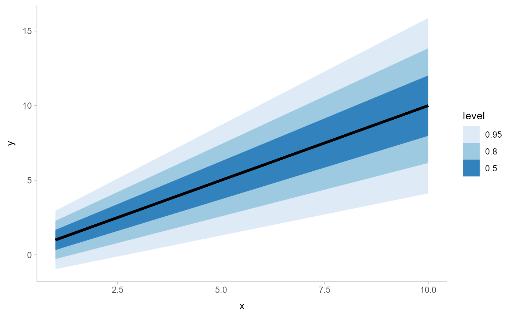
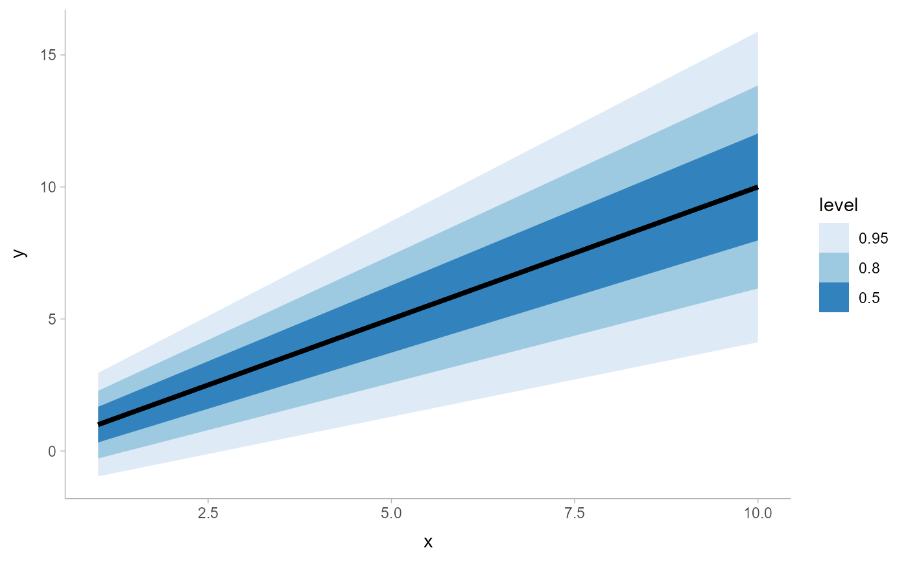

A combination of stat_slabinterval() and geom_lineribbon() with sensible defaults
for making line + multiple-ribbon plots. While geom_lineribbon() is intended for use on data
frames that have already been summarized using a point_interval() function,
stat_lineribbon() is intended for use directly on data frames of draws or of
analytical distributions, and will perform the summarization using a point_interval()
function.
Roughly equivalent to:
stat_slabinterval(
aes(
group = after_stat(level),
fill = after_stat(level),
order = after_stat(level),
size = NULL
),
geom = "lineribbon",
.width = c(0.5, 0.8, 0.95),
show_slab = FALSE,
show.legend = NA
)Usage
stat_lineribbon(
mapping = NULL,
data = NULL,
geom = "lineribbon",
position = "identity",
...,
.width = c(0.5, 0.8, 0.95),
point_interval = "median_qi",
orientation = NA,
na.rm = FALSE,
show.legend = NA,
inherit.aes = TRUE,
check.aes = TRUE,
check.param = TRUE
)Arguments
- mapping
Set of aesthetic mappings created by
aes(). If specified andinherit.aes = TRUE(the default), it is combined with the default mapping at the top level of the plot. You must supplymappingif there is no plot mapping.- data
The data to be displayed in this layer. There are three options:
If
NULL, the default, the data is inherited from the plot data as specified in the call toggplot().A
data.frame, or other object, will override the plot data. All objects will be fortified to produce a data frame. Seefortify()for which variables will be created.A
functionwill be called with a single argument, the plot data. The return value must be adata.frame, and will be used as the layer data. Afunctioncan be created from aformula(e.g.~ head(.x, 10)).- geom
<Geom | string> Use to override the default connection between
stat_lineribbon()andgeom_lineribbon()- position
<Position | string> Position adjustment, either as a string, or the result of a call to a position adjustment function. Setting this equal to
"dodge"(position_dodge()) or"dodgejust"(position_dodgejust()) can be useful if you have overlapping geometries.- ...
Other arguments passed to
layer(). These are often aesthetics, used to set an aesthetic to a fixed value, likecolour = "red"orlinewidth = 3(see Aesthetics, below). They may also be parameters to the paired geom/stat. When paired with the default geom,geom_lineribbon(), these include:step<scalar logical | string> Should the line/ribbon be drawn as a step function? One of:
FALSE(default): do not draw as a step function."mid"(orTRUE): draw steps midway between adjacent x values."hv": draw horizontal-then-vertical steps."vh": draw as vertical-then-horizontal steps.
TRUEis an alias for"mid", because for a step function with ribbons"mid"is reasonable default (for the other two step approaches the ribbons at either the very first or very last x value will not be visible).
- .width
<numeric> The
.widthargument passed topoint_interval: a vector of probabilities to use that determine the widths of the resulting intervals. If multiple probabilities are provided, multiple intervals per group are generated, each with a different probability interval (and value of the corresponding.widthandlevelgenerated variables).- point_interval
<function | string> A function from the
point_interval()family (e.g.,median_qi,mean_qi,mode_hdi, etc), or a string giving the name of a function from that family (e.g.,"median_qi","mean_qi","mode_hdi", etc; if a string, the caller's environment is searched for the function, followed by the ggdist environment). This function determines the point summary (typically mean, median, or mode) and interval type (quantile interval,qi; highest-density interval,hdi; or highest-density continuous interval,hdci). Output will be converted to the appropriatex- ory-based aesthetics depending on the value oforientation. See thepoint_interval()family of functions for more information.- orientation
<string> Whether this geom is drawn horizontally or vertically. One of:
NA(default): automatically detect the orientation based on how the aesthetics are assigned. Automatic detection works most of the time."horizontal"(or"y"): draw horizontally, using theyaesthetic to identify different groups. For each group, uses thex,xmin,xmax, andthicknessaesthetics to draw points, intervals, and slabs."vertical"(or"x"): draw vertically, using thexaesthetic to identify different groups. For each group, uses they,ymin,ymax, andthicknessaesthetics to draw points, intervals, and slabs.
For compatibility with the base ggplot naming scheme for
orientation,"x"can be used as an alias for"vertical"and"y"as an alias for"horizontal"(ggdist had anorientationparameter before base ggplot did, hence the discrepancy).- na.rm
<scalar logical> If
FALSE, the default, missing values are removed with a warning. IfTRUE, missing values are silently removed.- show.legend
<logical> Should this layer be included in the legends?
NA, the default, includes if any aesthetics are mapped.FALSEnever includes, andTRUEalways includes. It can also be a named logical vector to finely select the aesthetics to display.- inherit.aes
If
FALSE, overrides the default aesthetics, rather than combining with them. This is most useful for helper functions that define both data and aesthetics and shouldn't inherit behaviour from the default plot specification, e.g.borders().- check.aes, check.param
If
TRUE, the default, will check that supplied parameters and aesthetics are understood by thegeomorstat. UseFALSEto suppress the checks.
Value
A ggplot2::Stat representing a line + multiple-ribbon geometry which can
be added to a ggplot() object.
Details
To visualize sample data, such as a data distribution, samples from a
bootstrap distribution, or a Bayesian posterior, you can supply samples to
the x or y aesthetic.
To visualize analytical distributions, you can use the xdist or ydist
aesthetic. For historical reasons, you can also use dist to specify the distribution, though
this is not recommended as it does not work as well with orientation detection.
These aesthetics can be used as follows:
xdist,ydist, anddistcan be any distribution object from the distributional package (dist_normal(),dist_beta(), etc) or can be aposterior::rvar()object. Since these functions are vectorized, other columns can be passed directly to them in anaes()specification; e.g.aes(dist = dist_normal(mu, sigma))will work ifmuandsigmaare columns in the input data frame.distcan be a character vector giving the distribution name. Then thearg1, ...arg9aesthetics (orargsas a list column) specify distribution arguments. Distribution names should correspond to R functions that have"p","q", and"d"functions; e.g."norm"is a valid distribution name because R defines thepnorm(),qnorm(), anddnorm()functions for Normal distributions.See the
parse_dist()function for a useful way to generatedistandargsvalues from human-readable distribution specs (like"normal(0,1)"). Such specs are also produced by other packages (like thebrms::get_priorfunction in brms); thus,parse_dist()combined with the stats described here can help you visualize the output of those functions.
Computed Variables
The following variables are computed by this stat and made available for
use in aesthetic specifications (aes()) using the after_stat()
function or the after_stat argument of stage():
xory: For slabs, the input values to the slab function. For intervals, the point summary from the interval function. Whether it isxorydepends onorientationxminorymin: For intervals, the lower end of the interval from the interval function.xmaxorymax: For intervals, the upper end of the interval from the interval function..width: For intervals, the interval width as a numeric value in[0, 1]. For slabs, the width of the smallest interval containing that value of the slab.level: For intervals, the interval width as an ordered factor. For slabs, the level of the smallest interval containing that value of the slab.pdf: For slabs, the probability density function (PDF). Ifoptions("ggdist.experimental.slab_data_in_intervals")isTRUE: For intervals, the PDF at the point summary; intervals also havepdf_minandpdf_maxfor the PDF at the lower and upper ends of the interval.cdf: For slabs, the cumulative distribution function. Ifoptions("ggdist.experimental.slab_data_in_intervals")isTRUE: For intervals, the CDF at the point summary; intervals also havecdf_minandcdf_maxfor the CDF at the lower and upper ends of the interval.
Aesthetics
The line+ribbon stats and geoms have a wide variety of aesthetics that control
the appearance of their two sub-geometries: the line and the ribbon.
These stats support the following aesthetics:
x: x position of the geometry (when orientation ="vertical"); or sample data to be summarized (whenorientation = "horizontal"with sample data).y: y position of the geometry (when orientation ="horizontal"); or sample data to be summarized (whenorientation = "vertical"with sample data).weight: When using samples (i.e. thexandyaesthetics, notxdistorydist), optional weights to be applied to each draw.xdist: When using analytical distributions, distribution to map on the x axis: a distributional object (e.g.dist_normal()) or aposterior::rvar()object.ydist: When using analytical distributions, distribution to map on the y axis: a distributional object (e.g.dist_normal()) or aposterior::rvar()object.dist: When using analytical distributions, a name of a distribution (e.g."norm"), a distributional object (e.g.dist_normal()), or aposterior::rvar()object. See Details.args: Distribution arguments (argsorarg1, ...arg9). See Details.
In addition, in their default configuration (paired with geom_lineribbon())
the following aesthetics are supported by the underlying geom:
Ribbon-specific aesthetics
xmin: Left edge of the ribbon sub-geometry (iforientation = "horizontal").xmax: Right edge of the ribbon sub-geometry (iforientation = "horizontal").ymin: Lower edge of the ribbon sub-geometry (iforientation = "vertical").ymax: Upper edge of the ribbon sub-geometry (iforientation = "vertical").order: The order in which ribbons are drawn. Ribbons with the smallest mean value oforderare drawn first (i.e., will be drawn below ribbons with larger mean values oforder). Iforderis not supplied togeom_lineribbon(),-abs(xmax - xmin)or-abs(ymax - ymax)(depending onorientation) is used, having the effect of drawing the widest (on average) ribbons on the bottom.stat_lineribbon()usesorder = after_stat(level)by default, causing the ribbons generated from the largest.widthto be drawn on the bottom.
Color aesthetics
colour: (orcolor) The color of the line sub-geometry.fill: The fill color of the ribbon sub-geometry.alpha: The opacity of the line and ribbon sub-geometries.fill_ramp: A secondary scale that modifies thefillscale to "ramp" to another color. Seescale_fill_ramp()for examples.
Line aesthetics
linewidth: Width of line. In ggplot2 < 3.4, was calledsize.linetype: Type of line (e.g.,"solid","dashed", etc)
Other aesthetics (these work as in standard geoms)
group
See examples of some of these aesthetics in action in vignette("lineribbon").
Learn more about the sub-geom override aesthetics (like interval_color) in the
scales documentation. Learn more about basic ggplot aesthetics in
vignette("ggplot2-specs").
See also
See geom_lineribbon() for the geom underlying this stat.
Other lineribbon stats:
stat_ribbon()
Examples
library(dplyr)
library(ggplot2)
library(distributional)
theme_set(theme_ggdist())
# ON SAMPLE DATA
set.seed(12345)
tibble(
x = rep(1:10, 100),
y = rnorm(1000, x)
) %>%
ggplot(aes(x = x, y = y)) +
stat_lineribbon() +
scale_fill_brewer()
 # ON ANALYTICAL DISTRIBUTIONS
# Vectorized distribution types, like distributional::dist_normal()
# and posterior::rvar(), can be used with the `xdist` / `ydist` aesthetics
tibble(
x = 1:10,
sd = seq(1, 3, length.out = 10)
) %>%
ggplot(aes(x = x, ydist = dist_normal(x, sd))) +
stat_lineribbon() +
scale_fill_brewer()

# ON ANALYTICAL DISTRIBUTIONS
# Vectorized distribution types, like distributional::dist_normal()
# and posterior::rvar(), can be used with the `xdist` / `ydist` aesthetics
tibble(
x = 1:10,
sd = seq(1, 3, length.out = 10)
) %>%
ggplot(aes(x = x, ydist = dist_normal(x, sd))) +
stat_lineribbon() +
scale_fill_brewer()
